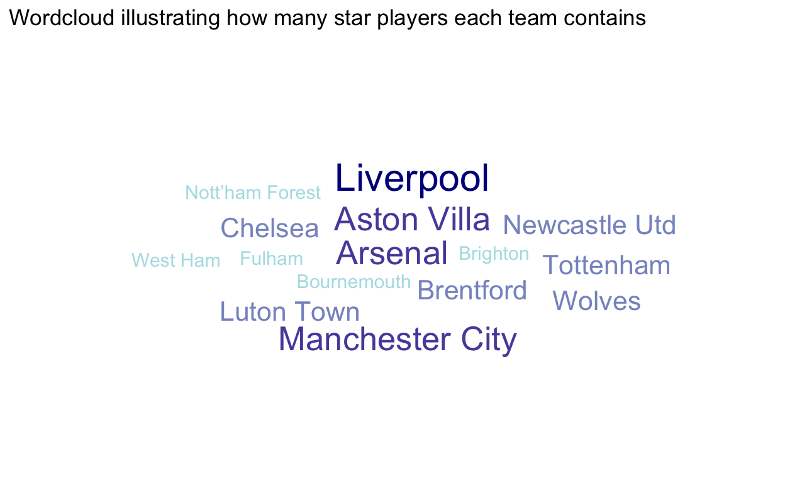

For the final project, I will be working on a data set about Shooting statistics of all players in the English Premier Leage to investigate which factors affecting the scoring ability and strength of a team
First, we wil take a look at the total number of goals each team has scored so far this season
Interpretations:
Its often advised that a team shouldnt rely too much on just one players scoring ability. Its better for a team to have several players who can chip in with goals. That way, if the top goal scorers get injured, the teams performance wont suffer as much.
For each team, we will examine how many percents of the total goals coming from the top 5 goal scorers versus the remaining players
Having a team with diverse players who can all contribute to scoring goals is crucial. However, what really makes a team shine is having one or two standout players who consistently score more goals than the rest. These are the stars of the team, and they can make a difference in a match. If goals are too evenly distributed among the players, it suggests that the team lacks a reliable go-to scorer, which isnt ideal.
After considering the whole data set, I decided that the top goal scorers (or star players) of the tournament should be those who have scored at least 8 goals. Then I will count the number of star players each team has and create a word cloud based on this data. A team with more star players will have a bigger name on the map and a deeper color

Interpretation:
Lets now generate a ggradar plot to analyze and compare the performances of the top goal scorers from three different teams. Well focus on various metrics including Sh (Shots), SoT (Shots on Target), SoT. (Shot Accuracy Percentage),xG (Expected Goals), and npxG (Non-penalty Expected Goals). The selected players for comparison are Erling Haaland (with 19 goals, representing Manchester City), Bryan Mbeumo (with 8 goals, representing Brentford), and Zeki Amdouni (with 4 goals, representing Burnley). These players are chosen to represent teams positioned 2nd, 12th, and 19th respectively in the goals ranking. Thus, this visualization not only evaluates the individual performances of these players but also offers insights into their teams overall performance.
Interpretations:
In soccer, goals can be categorized into three types: those scored from penalty kicks, those from free kicks, and the rest. While penalty and free-kick goals usually occur less frequently than the third type, their occurrence shouldnt be significantly lower compared to regular goals. This adds flexibility to the team and provides more ways (or tactics) for scoring goals, particularly when up against a team with a solid defensive strategy
To examine if a team has a flexible attacking strategy, we will take a look at the distribution of goal types for each team
Interpretation:
Interpretation:
Looking at the color of the matrix, we see that the variables having the strongest correlation with Goals are:
These variables have a strong linear relationship with the number of goals that a player scored, which, in turns, are likely to have a strong correlation to the total number of goals of the whole team. Therefore, to study the scoring ability of a team, we will focus on these variables.
First, I choose to study 3 teams Sheffield Utd, Manchester Utd, and Arsenal, whose goals are characterized as low, medium, and high in the tournament ranking
Lets explore the relationship between the number of shots on target and number of goals for each player in these 3 teams
Interpretations:
The position of the points and the lines of best fit both suggest a positive linear relationship between Shots on Target and Goals Scored. Looking at the boxplot, we realize that Arsenals distribution has significantly higher quartiles than the distribution of the other 2 teams. This is consistent to the density plot on the right, which indicates that Arsenal players scored the most goals, followed by Manchester Utd players, then Sheffield Utd players.
Next, I will accumulate the number of goals, shots, and shots on target of all players in each team to examine the relationship of these 3 variables
Interpretation:
There is a strong positive linear relationship between Shot on Target and Goals (indicated by the line of best fit) as well as between Shots and Goals (indicated by the fact that higher points have lighter blue color)
Interpretation:
Both Expected Goals and Non-penalty Expected Goals have a strong positive correlation to Goals scored
Interpretation
The density plots of npxG implies that Arsenal players are more likely to have higher non-penalty expected goals, which is consistent to the density plots of Goals (on the right hand side). In general, non-penalty expected goals are correlated to the number of goals scored. This is because the majority of goals come from non-penalty goals; therefore, a players who have more shots that are likely to result in a goal will have more goals in total.
To determine the efficiency of a team, we will take a look at the difference between Actual Goals and Expected Goals. If a team has more goals than its total xG probably, then it is likely that the players of that teams have an above average shooting/finishing ability. On the other hand, a negative goal difference might indicate a team has experienced poor luck or has below average finishing ability.
Interpretation